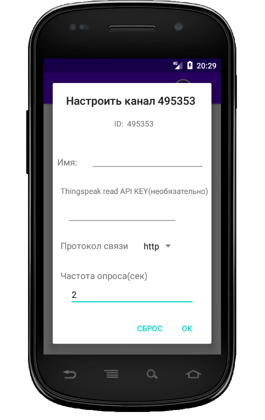

|
При первом запуске запрос на создание канала появится автоматически. Позже надо зайти в
меню "Каналы".
После открытия окна каналов снова зайти в меню и выбрать пункт "Добавить канал" В запросе надо записать ID канала(ищите channelID находится почти наверху и состоит только из цифр и символов верхнего регистра). |
 |
Следующий шаг - настройка отображения канала.
|
|||||
Для отдельного поля в канале устанавливаются: имя поля, единицы измерения ,
если флажок в настройках сброшен ,то поле не будет показано
После заполнения надо жать на "ввод" на клавиятуре иначе новые значения могут и не сохраниться
Для сохранения настроек канала надонажать кнопку в тулбаре(вверху). |
В запросе на сохранение внимательно проверьте что получилось. Если всё верно - жмём "ok". Если надо править жмём "отмена" и исправляем. | ||||||
| После сохранения будет переход к экрану со списком каналов. Там, для любого из каналов можно выбрать одно из действий - редактировать, показать, удалить. Выбор за вами. Если тапнуть по кнопке "Показать", то после запроса, будут показаны последние значения. | |||||||
| Главное окно приложения - просмотр последних значений, выбранных для показа. Если тапнуть по рисунку с графиком, то откроется окно показа диаграмм для этого поля. |
Диаграммы строятся для последних часов, дней. Имеется возможность выбора периода времени. Период начинается с 00:00:00 стартовой точки и заканчивается в 23:59:59 конечной. Если выбрать только стартовую точку - будет показана диаграмма за сутки. |
||||||
| Пример отрисованной диаграммы. Если тапнуть по значку часов - запустится отображение данных с обновлением. Частота опроса для обновления указывается при настройке каналов - смотри второй рисунок вверху страницы. | |||||||
|
|||||||